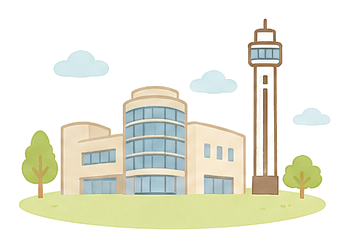

ホーム ＞ 活動アーカイブ
活動アーカイブ
過去の勉強会の記録です。開催が終わった回は、自動でこちらに新しい順で加わります。
2026年 5回
2026年5月21日 ・ 船堀コミュニティ会館
ご存じですか？『重度認知症ケア』 ～医師がおすすめできるもう一つの認知症治療～
医療法人社団城東桐和会 タムスさくら病院江戸川 重度認知症デイケア ／ 尾張 友美 氏
2026年4月16日 ・ 船堀コミュニティ会館
『こども食堂』は食事だけの場ではない。 ～体験格差とネグレクトを超え、誰も置き去りにしない地域包括ケアへ～
NPO法人らいおんはーと ／ 佐藤 すずみ 氏
2026年3月19日 ・ コミュニティプラザ一之江
令和6年能登半島地震とBCP
医療法人社団美加未会 ひかりホームクリニック ／ 森 智治 氏
2026年2月19日 ・ 船堀コミュニティ会館
高齢者のメンタルヘルスとコミュニケーション
医療法人すずらん会 たろうクリニック葛西 ／ 浦島 創 氏
2026年1月22日 ・ 船堀コミュニティ会館
介護保険制度の見直し（令和7年度補正予算・令和8年度／令和9年度 介護報酬改定について）
株式会社 マロー・サウンズ・カンパニー ／ 代表取締役 田中 紘太 氏
2025年 11回
2025年11月20日 ・ 船堀コミュニティー会館 第4集会室
要介護高齢者への口腔ケアと嚥下障害への対応 〜食べる喜びの支援〜
医療法人社団ハピネス すぎもと歯科・ファミリア歯科 ／ 訪問専門医 白井 朋代 先生
2025年10月16日 ・ 船堀コミュニティー会館 第4集会室
お一人様支援
一般社団法人愛の会 ／ 主任ソーシャルワーカー・社会福祉士 岡江 晃児 氏
2025年9月25日
最期の時を豊かに 〜在宅での看取りと高齢者の幸福感〜
ひまわりクリニック ／ 院長 山田 智子 先生
2025年8月28日
心療内科医が語る「家族で考える最期」〜家族療法の視点から学ぶACP〜
聖路加国際病院 心療内科 ／ 医長・高齢者ケアチームリーダー 山田 宇以 先生
2025年7月17日
フットケアの重要性
フットケア専門職
2025年6月19日
ユマニチュード 〜「見る・話す・触れる・立つ」で伝えるケア〜
医療現場での実践報告
2025年5月15日
老人ホームの探し方 〜高齢者施設の現状〜
ロイヤル介護 入居相談室
2025年4月17日
訪問診療の相談員との情報交換会
訪問診療相談員 4名
2025年3月27日
障がい者支援の現状と課題
江戸川区議会議員 神尾 てるあき 氏
2025年2月20日
ヤングケアラー
グループワーク
2025年1月23日 ・ 船堀コミュニティー会館 集会室第4
診ることを通して不確実性や曖昧さを許容する能力を育てましょう 〜答えのない時代に、答えを求めない思考を〜
たろうクリニック ／ 訪問医・写真家 鮫島 先生
2024年 10回
2024年11月21日
管理栄養士の仕事について
管理栄養士
2024年10月17日
これからの摂食嚥下リハビリテーション
東京科学大学大学院 医歯学総合研究科 ／ 教授 戸原 玄 先生
2024年9月19日
認知症と診断されて…
認知症当事者 竹内 裕 氏（対談形式）
2024年8月15日
ACPの前に知っておきたい終末期医療の知識
終末期医療の専門職
2024年7月18日
フットケアの重要性
フットケア専門職（実演あり）
2024年6月20日 ・ 船堀コミュニティー会館 第4集会室
思いを伝える「もしもの時」その前に考えよう 〜大病からの生還と私たちのACP〜
体験を交えたACPのお話
2024年5月16日 ・ 船堀コミュニティー会館 第4集会室
共生社会を目指して 〜江戸川区の認知症施策と公式アプリ「eito」〜
江戸川区の認知症施策のご紹介
2024年4月18日 ・ 船堀コミュニティ会館 集会室第4
医療の視点と介護の視点 〜事例から学ぶグループワーク〜
ひまわりクリニック 山田 先生
2024年2月15日
第100回記念 〜これからの地域連携〜
江戸川区で地域連携にご尽力された方
2024年1月18日
令和6年度 介護保険制度改正・トリプル改定について
制度改定の解説
2023年 10回
2023年11月16日
ICTを活用した多職種連携について
多職種連携の実践
2023年10月19日 ・ 船堀コミュニティー会館 集会室第4
福祉用具の体験勉強会 〜知って、体験して、万が一に備えよう〜
福祉用具の体験ワーク
2023年9月21日 ・ コミュニティプラザ一之江 集会室第2
最近の葬儀から考える終活
葬儀・終活のお話
2023年8月17日
江戸川区のゴミ屋敷問題を考える
地域課題のお話
2023年7月20日 ・ コミュニティプラザ一之江 集会室第4
定期巡回・随時対応型訪問介護看護「しろひげレンジャー24時」
定期巡回サービスの実際
2023年6月22日 ・ コミュニティプラザ一之江 集会室第2
パーキンソン病の介護について考えよう
パーキンソン病の介護
2023年5月18日
会場開催 再開記念トークセッション
医療法人社団ハピネス 杉本 先生 ／ kokoa訪問鍼灸マッサージ 市毛 先生
2023年4月20日
近況報告会（会食形式での交流会）
参加者交流
2023年2月16日 ・ ZOOM開催（オンライン）
これからの介護保険改定について 〜2024年トリプル改定に向けて〜
制度改定の解説
2023年1月26日 ・ ZOOM開催（オンライン）
わたしにできる地域連携って
地域連携のお話
2022年 11回
2022年11月17日 ・ ZOOM開催（オンライン）
新型コロナウイルスクラスター発生！ 〜あなたの事業所はだいじょうぶ？〜
区内施設のクラスター事例とBCP
2022年10月20日 ・ ZOOM開催（オンライン）
ケアマネージャーに聞いてみよう
ケアマネージャー 3名（座談会）
2022年9月15日 ・ ZOOM開催（オンライン）
もしバナゲームしませんか 〜わたしにとって大切なもの〜
ゲーム形式のグループワーク
2022年8月18日 ・ ZOOM＋会場（ハイブリッド）
コロナ禍に癒しを 〜訪問鍼灸マッサージの現場から〜
からだ元気治療院
2022年7月21日 ・ ZOOM開催（オンライン）
介護事故と保険請求について
保険の専門家（事例を交えて）
2022年6月16日 ・ ZOOM開催（オンライン）
緩和ケア 〜病院と在宅の違い〜
緩和ケア認定看護師
2022年5月26日 ・ ZOOM開催（オンライン）
吉野家レトルトケア牛丼の提案 〜吉野家が考える嚥下食〜
株式会社吉野家
2022年4月21日 ・ ZOOM開催（オンライン）
働きやすい職場とは
座談会
2022年3月17日 ・ ZOOM開催（オンライン）
歩行・ウォーキングについて
勉強会・グループワーク
2022年2月17日 ・ ZOOM開催（オンライン）
認知症の対応について、お話しませんか？
「注文を間違える料理店」スタッフ 木村 誠 先生
2022年1月20日 ・ ZOOM開催（オンライン）
オンライン勉強会（グループワーク）
勉強会・グループワーク
2021年 10回
2021年12月16日 ・ ZOOM開催（オンライン）
今年を振り返り、来年に向かっての抱負
参加者ディスカッション
2021年11月18日 ・ ZOOM開催（オンライン）
グループワーク
勉強会・グループワーク
2021年10月21日 ・ ZOOM開催（オンライン）
人と人との繋がりについて考えませんか（座談会）
勉強会・グループワーク
2021年9月16日 ・ ZOOM開催（オンライン）
江戸川区の水害と避難行動要支援者の対策について
江戸川区 危機管理部 防災危機管理課 計画係
2021年8月19日 ・ ZOOM開催（オンライン）
明日から使える摂食嚥下の基礎知識
医療法人社団ハピネス ／ 理事長 杉本 先生
2021年7月15日 ・ ZOOM開催（オンライン）
アドバンス・ケア・プランニング（人生会議）〜浦安の事例から〜
勉強会・グループワーク
2021年6月17日 ・ ZOOM開催（オンライン）
ACP（人生会議）〜在宅医療からの提案と緩和ケアの事例〜
あかり在宅クリニック 十九浦 先生 ／ 関口 看護師
2021年5月 ・ ZOOM開催（オンライン）
地域包括ケアにおけるAIとICTの活用〜地域資源の見える化とケアプラン作成支援AIの連携〜
株式会社ウエルモ
2021年4月 ・ ZOOM開催（オンライン）
アクティブシニアについて〜介護の仕事について語り合おう〜
グループ討議
2021年2月18日 ・ ZOOM開催（オンライン）
令和3年度 介護報酬改定セミナー
WEB研修
2020年 1回
2020年1月23日 ・ 船堀コミュニティ会館
腰痛を無くそう！ 〜腰痛のメカニズム・予防・ストレッチ体操〜
スマイリー訪問看護ステーション ／ 理学療法士 芝本 幸俊 氏
2019年 12回
2019年12月19日 ・ キリンシティー船堀（タワーホール船堀1F）
クリスマスパーティー（懇親会・プレゼント交換）
懇親イベント
2019年11月21日 ・ 船堀コミュニティ会館
言語聴覚士にできること
株式会社アオアクア 訪問看護ステーションアオアクア ／ 畦地 雄平 氏
2019年10月17日 ・ 船堀コミュニティ会館
精神障害のある方が長く働き続けるために知っておいてほしいこと
江戸川区障害者就労支援センター ／ 副所長 宮脇 康成 氏
2019年9月19日 ・ 特別養護老人ホーム 暖心苑
高齢者の心不全とフレイルについて 〜心不全パンデミックの到来！予防・治療しよう〜
社会医療法人社団 森山記念病院 循環器内科 ／ 赤塚 健彦 先生
2019年8月22日 ・ 船堀コミュニティ会館
これって虐待ですか？ 〜高齢者虐待について考えてみませんか？〜
グループ討論
2019年7月25日 ・ 船堀コミュニティ会館
テンプラで伝わる！伝え方講座 〜伝える力がなぜ必要か？〜
Team Builders ／ トップ経営コーチ 日比 孝祐 氏
2019年6月18日 ・ 船堀コミュニティ会館
紙オムツの正しい使い方と選び方
株式会社光洋-ディスパース 本社営業部 ／ 佐藤 正治 氏
2019年5月16日 ・ 船堀コミュニティ会館
熟年者の必要な栄養摂取について
宅配クック123 ／ 管理栄養士（試食会あり）
2019年4月18日 ・ 二之江コミュニティ会館
訪問診療における超音波検査の有用性
医療法人社団げんき会 げんきいろクリニック ／ 院長 佐賀 栄一 先生
2019年3月20日 ・ 特別養護老人ホーム 清心苑
船堀会 mini 福祉機器展（電動車椅子・自動寝返り支援ベッド等の体験会）
機器体験会
2019年2月21日 ・ 船堀コミュニティ会館
不安を無くそう！呼吸器疾患の方に対する介護と運動
株式会社COCOYUI 訪問看護リハビリステーションここゆい ／ 代表取締役・理学療法士 高橋 洋介 氏
2019年1月17日 ・ 船堀コミュニティ会館
新春座談会（賀詞交歓会・グループ座談会）
参加者座談会
2018年 11回
2018年12月20日 ・ 船堀コミュニティ会館
医療介護の専門性からのファイナンシャルプランニングについて
木村 誠 先生（『注文を間違える料理店』スタッフ）／ 福田 啓子 先生
2018年11月15日 ・ 暖心苑（社会福祉法人 東京清音会）
認知症の対応方法について
東京さくら病院・認知症疾患医療センター ／ 副院長 波多野 良二 先生
2018年10月18日 ・ 船堀コミュニティ会館
認知症サポーター ステップアップ講座
認知症サポーター養成
2018年9月20日 ・ 葛西区民館
いつまでも自分らしく生きるためのフレイル予防
清新町健康サポートセンター ／ 理学療法士 飯塚 早苗 氏
2018年8月23日 ・ 特別養護老人ホーム 清心苑
義肢装具について
川村義肢株式会社 ／ 五十嵐 隆 氏
2018年6月21日 ・ 船堀コミュニティ会館
介護のしごとシリーズ 第4回「これからの訪問看護（訪問リハビリ）」
訪問看護事業所による座談会
2018年5月17日 ・ 船堀コミュニティ会館
介護のしごとシリーズ 第3回「これからのケアマネ」〜顔の見える多職種連携〜
進行：久家 定男 氏（清心苑）
2018年4月19日 ・ 船堀コミュニティ会館
地域医療から学ぶシリーズⅡ「船堀橋クリニック 竹内院長先生を囲んで」
船堀橋クリニック ／ 院長 竹内 孝治 先生
2018年3月15日 ・ 特別養護老人ホーム 清心苑
介護のしごとシリーズ 第2回「これからの訪問介護」
訪問介護事業者による座談会
2018年2月15日 ・ きらら一之江
介護のしごとシリーズ 第1回「これからのデイサービス」
きらら一之江デイサービス ／ 管理者 山内 氏 ほか公開座談会
2018年1月18日 ・ はなの舞 一之江店
新年会（賀詞交歓会・抽選会）
懇親イベント
2017年 12回
2017年12月21日 ・ 船堀コミュニティ会館
平成30年度 介護保険制度改正の概要
株式会社マロー・サウンズ・カンパニー ／ 代表取締役 田中 紘太 氏
2017年11月16日 ・ 船堀コミュニティ会館
地域医療から学ぶシリーズ 第3回「医療者の価値観を押しつけない在宅医療 〜アフリカでの経験から〜」
医療法人社団げんき会 げんきいろクリニック ／ 院長 山中 光茂 先生（元・松阪市長）
2017年10月19日 ・ 船堀コミュニティ会館
地域医療から学ぶシリーズ 第2回「慢性腎臓病と病診連携について」
川田 有香 先生 ／ 住田 美穂 先生
2017年9月21日 ・ 船堀コミュニティ会館
地域医療から学ぶシリーズ 第1回
船堀橋クリニック 竹内 孝治 院長 ／ 南行徳駅前クリニック 新妻 晋一郎 院長
2017年8月24日 ・ 勤労福祉会館
3周年記念「認知症ケア×演劇ワークショップ」
江戸川介護劇団たなごころ ／ 座長 齋藤 恵草 氏
2017年7月20日 ・ 勤労福祉会館
デス・カフェ
シニアライフデザイン ／ 代表 堀口 裕子 氏
2017年6月19日 ・ 特別養護老人ホーム 清心苑
特発性正常圧水頭症を「知る」
厚地脳神経外科病院 ／ 理事長 厚地 正道 先生
2017年5月18日 ・ 勤労福祉会館
訪問看護の現状について
江戸川区医師会訪問看護ステーション ／ 所長 杉浦 美代子 氏
2017年4月20日 ・ 勤労福祉会館
訪問マッサージにできること 〜ふれあいから生まれる心の安定〜
タダノ訪問リハビリマッサージ ／ あん摩マッサージ指圧師 只野 慎吾 氏
2017年3月16日 ・ 勤労福祉会館
認知症サポーター養成講座
清心苑・暖心苑 地域包括支援センター（岡本 広司／馬上 英樹／久家 定男／舘 明美 氏）
2017年2月16日 ・ 勤労福祉会館
私たちはどこに行こうとしているのか。
一般社団法人 暮らしの保健室かなで ／ 代表理事・室長 福田 英二 氏
2017年1月19日 ・ 勤労福祉会館
新春特別講演「認知症患者における便通コントロールについて」
さくらライフ錦糸クリニック 松枝 啓 院長 ／ さくらライフ江戸川クリニック 茂呂 勝美 院長
2016年 11回
2016年12月15日 ・ キリンシティー船堀
クリスマスパーティー（懇親会・プレゼント交換）
懇親イベント
2016年11月17日 ・ グリーンパレス
これだけは知っておきたい相続のあれこれ
大畠司法書士事務所 ／ 大畠 太郎 氏
2016年10月20日 ・ 勤労福祉会館
薬剤師との連携について
公益社団法人 江戸川区薬剤師会 ／ 会長 槇原 昭典 氏
2016年9月23日 ・ 特別養護老人ホーム 清心苑
最新の福祉用具を知ろう
野口株式会社 ／ 介護事業部長 水上 真二 氏
2016年8月18日 ・ 勤労福祉会館
徘徊の早期発見…江戸川区モデルを検討する
株式会社ウメザワ ／ 梅澤 宗一郎 氏
2016年7月21日 ・ 勤労福祉会館
生活困窮者の方への自立支援
くらしごと相談室葛西 ／ 自立相談支援員 西川 晃将 氏
2016年6月16日 ・ 勤労福祉会館
いつまでも健康な歯を維持するために
医療法人社団恬生会 安寿歯科 ／ 院長 滝川 裕子 氏
2016年5月24日 ・ 一之江コミュニティプラザ
パーキンソン病を知ろう！運動と介助方法
訪問看護ステーションつぐみ ／ 理学療法士 高橋 洋介 氏
2016年4月21日 ・ 勤労福祉会館
葬儀を知る…エンディングとは
株式会社想和 ／ 代表取締役 生江 洋史 氏
2016年3月17日 ・ 勤労福祉会館
認知症特集 第二弾「認知症の人を知ろう！」
NPO法人 地域生活サポートセンター ／ 小泉 由美子 氏
2016年1月21日 ・ 勤労福祉会館
解かりやすいマイナンバー制度
野村経営労務パートナーズ 寄村 進 氏 ／ たつみ社会保険労務士事務所 水本 智 氏
2015年 11回
2015年11月19日 ・ 勤労福祉会館
認知症特集 第1弾「みんなで認知症を語ろう！『バアちゃんの世界』から学ぶ事例研究」
地域包括支援センター 清心苑 ／ 岡本 久司 氏
2015年10月15日 ・ 勤労福祉会館
詳しく解りやすい感染症のお話（インフルエンザ・ノロウイルス対策）
江戸川保健所 感染症対策第2課 ／ 松野 吉晃 氏
2015年9月17日 ・ コミュニティプラザ一之江
介護事業所における介護事故の判例
日本大学法学部 ／ 准教授 矢田 尚子 氏（進行：縁綜合伝喜支援センター 小幡 覚 氏）
2015年8月20日 ・ 勤労福祉会館
1周年記念講演「地域おこしを考える」
ライフネット生命保険 ／ 代表取締役会長兼CEO 出口 治明 氏
2015年7月16日 ・ 勤労福祉会館
最近の感染症について「誰もが知っている？結核のお話」
江戸川保健所 感染症第1課 ／ 大坪 くみ 氏
2015年6月18日 ・ コミュニティプラザ一之江
みんなで語ろう 介護の近況報告会
参加者全員による情報交換
2015年5月21日 ・ 勤労福祉会館
NPO法人なぎさ虹の会の事業紹介
なぎさ虹の会 ／ 会長 池山 恭子 氏
2015年4月16日 ・ コミュニティプラザ一之江
訪問介護の役割について
さくらライフクリニック ／ 訪問看護リーダー 古谷 則子 氏
2015年3月19日 ・ 勤労福祉会館
地域密着型サービス 〜認知症対応型共同生活介護とは〜
ラックの花 ／ 課長 秋山 純子 氏（総括：地域包括支援センター清心苑 岡本 広司 氏）
2015年2月26日 ・ 清心苑 本館1階ふれあいホール
地域密着型サービス「定期巡回・随時対応型訪問介護看護」〜在宅介護の究極のサービス〜
ジャパンケア 下津佐 省一 氏・鈴木 雄樹 氏（総括：地域包括支援センター暖心苑 久家 定男 氏）
2015年1月22日 ・ 勤労福祉会館 3階集会室
小規模多機能型居宅介護事業所の現状と方向性
あおぞら ／ 施設長 鷹觜 友 氏（総括：地域包括支援センター清心苑 岡本 広司 氏）
番外編 交流・懇親
2026年5月17日 ・ THE RIVERSIDE BBQ NISHIKASAI（新左近川バーベキュー場）
船堀会BBQ
交流イベント
2025年5月11日（日）・ THE RIVERSIDE BBQ NISHIKASAI（新左近川バーベキュー場）
船堀会BBQ
交流イベント
2024年5月19日（日）・ 葛西臨海公園バーベキュー広場
船堀会BBQ
交流イベント
2023年5月28日（日）
船堀会BBQ
交流イベント
2019年4月ごろ ・ 親睦バーベキュー
親睦バーベキュー
交流イベント
2016年3月27日 ・ 葛西臨海公園バーベキュー広場
お花見BBQ（第19回 船堀会と併催）
交流イベント
2015年12月17日 ・ 船堀タワーホール1F キリンシティー
クリスマスパーティー（約35名参加）
懇親イベント
2015年8月23日 ・ 東京湾
東京湾アジ釣り大会
交流イベント
2015年8月22日 ・ 西伊豆
介護研修の旅（西伊豆）
研修旅行
